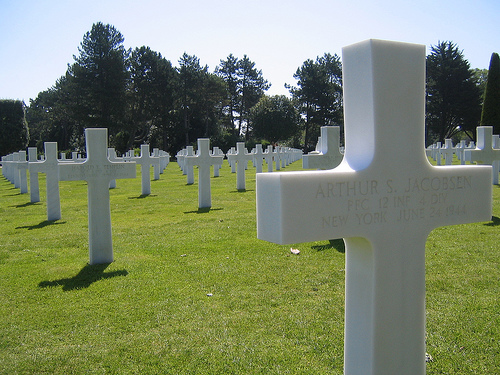

Hello!
Welcome to HistoryCourse1a1.
My name is Henric Thyrestam and this site is my secondary work
for the years 2016/2017.
Here I have collected information about certain events unfolding in europe during the early/mid 20th centeuary.
Most information on this site is about the battles taking place.

The cemetary in Normandy. Source
Information will be in english